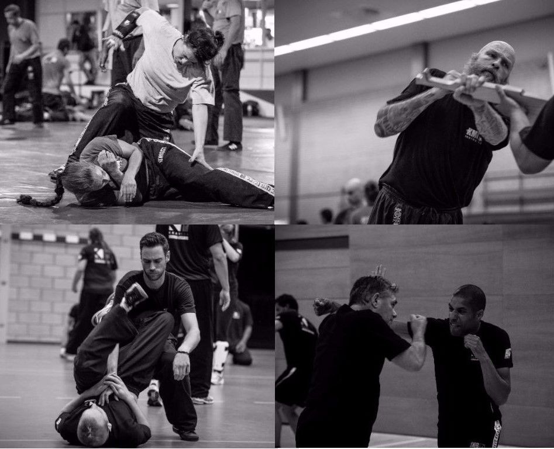
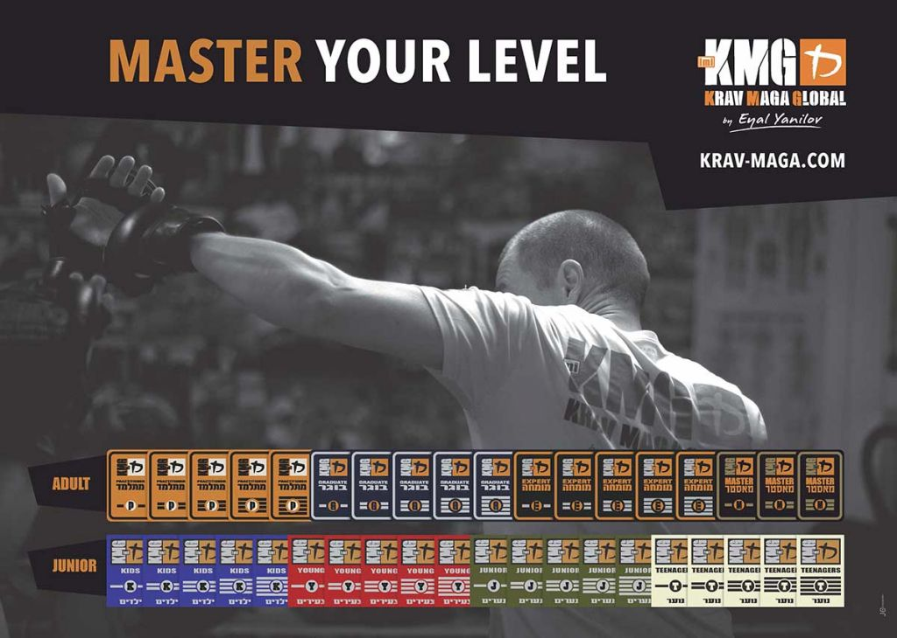

Proeflessen:
De meeste Krav Maga-scholen bieden proeflessen aan voor beginners. Dit is een goede manier om kennis te maken met de training en te zien of het bij je past. Proeflessen zijn meestal gratis of tegen een zeer lage prijs beschikbaar.
Abonnementen & Kosten:
De aangeboden tarieven en abonnementen variëren per locatie. Bij Krav Maga Noord-Holland het bijvoorbeeld als volgt:
Krav Maga Volwassenen (17+)
- Standaard abonnement: 2 keer per week, 1,25 uur per les - €48,95 per maand.
- Onbeperkt abonnement - €64,95 per maand.
- Tijdelijk abonnement: 1 keer per week, 1,25 per les - €32,95 per maand.
- Strippenkaart: 1,25 uur per strip - €108,95 per 10-strippenkaart.
Krav Maga Jeugd en Kinderen
- Teenager (14-16 jaar) abonnement: 1 keer per week, 1 uur per les - €29,95 per maand.
- Junior (11-13 jaar) abonnement: 1 keer per week, 1 uur per les - €29,95 per maand.
- Young (8-10 jaar) abonnement: 1 keer per week, 1 uur per les - €29,95 per maand.
- Children (5-7 jaar) abonnement: 1 keer per week, 1 uur per les - €29,95 per maand.
- Strippenkaarten beschikbaar voor Tieners (11-13, 14-16 jaar) en Kinderen (5-7, 8-10 jaar): 1 uur per strip - €99,95 per 10-strippenkaart.
Belangrijke Aantekeningen:
- Bij 75% aanwezigheid kun je deelnemen aan leveltesten, maar het wordt aangeraden om vaker te trainen.
- Gemiste lessen kunnen één maand vóór of binnen één maand vóór de lesdatum op een andere tijd of locatie worden ingehaald.
- Je hebt de flexibiliteit om verschillende locaties te combineren.
- Er is geen inschrijfgeld.
- Er geld geen opzet termijn.
- Bij opzegging betaal je alleen nog voor de lopende maand.


